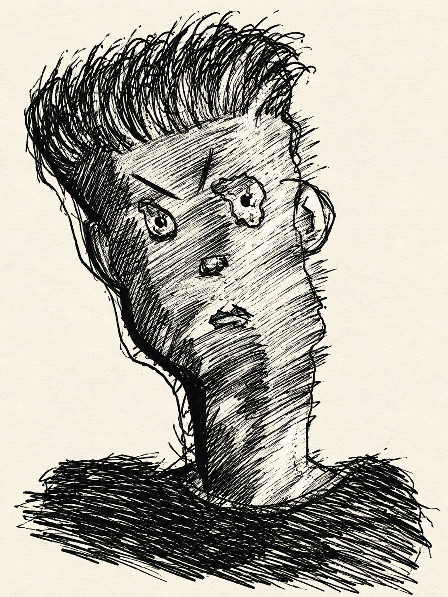

Scene preview
Your scene starts with a line. Paste a chatlog to begin.
Drag to position · Scroll on a selected image to zoom · Drop images to add layers

Filthlines Chatlog EditorYOUR SCENE. YOUR STORY.The solid background color can be changed under Chat colors.
Use *Character action. "Dialogue" for RP followed by speech, *action* for purple inline roleplay, ÷hidden text÷ for black redactions, and GTA color codes like {FF0000}. Set your character name for brighter dialogue. Save Project keeps every layer and original image; browser drafts keep text and settings.